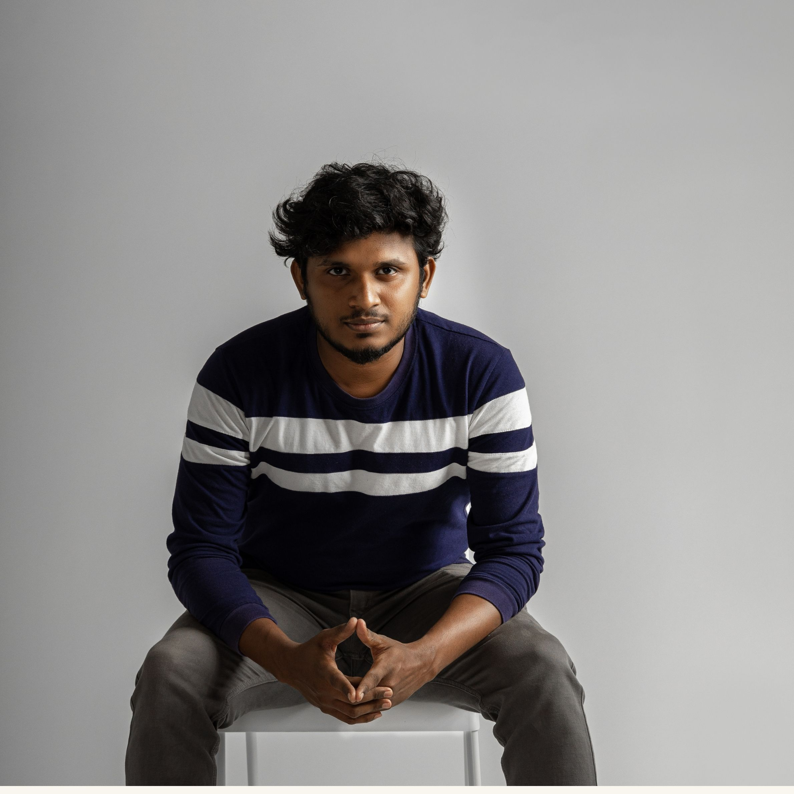
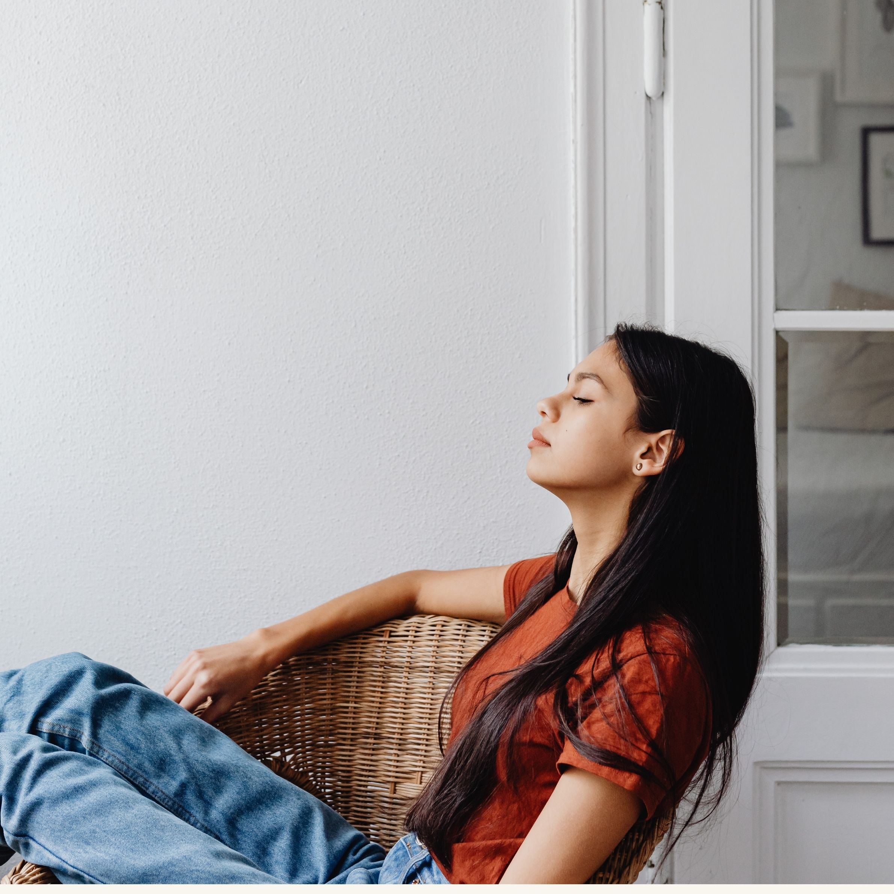

Our engagement shoots are all about capturing the unique chemistry between couples. Here's what one of our happy clients had to say about their experience:
We had our engagement shoot with ClickNPick and it was an absolute dream come true! The photos captured our love story perfectly. Every shot reflected our personalities and the special bond we share. The team was incredibly professional, yet so personable and fun to work with. We couldn't have asked for a better experience!
The ceremony video is a cherished keepsake that brings the magic of your wedding day back to life. Read how this service touched the hearts of our clients:
 The ceremony video created by ClickNPick was nothing short of magical. They captured every important moment, the laughter, the tears, and the unspoken emotions. Watching the video, we felt like we were reliving our special day all over again. The quality and attention to detail in their work are truly exceptional!
Our digital photography offers crisp, vibrant images that beautifully capture every moment. Discover the impact of our digital shoot from a couple's perspective:
 Choosing ClickNPick for our digital wedding shoot was the best decision we made. The photos are stunning, with vibrant colors and crystal-clear quality. They managed to capture the essence of our day beautifully. The digital format made sharing with friends and family a breeze. We are forever grateful for these beautiful memories!
For lovers of the classic and timeless, our film photography provides a unique charm. Here's a testimonial that reflects the essence of our film shoot service:
The film photography by ClickNPick added a timeless and classic touch to our wedding memories. Each photograph is a work of art, boasting incredible depth and a unique character that digital just can't match. Their skill in using film is remarkable, and they captured the vintage feel we were hoping for perfectly.
Our photo booth adds fun and spontaneity to your special day. Find out what one of our delighted couples had to say about this entertaining service:
The photo booth from [Business Name] was a huge hit at our wedding! It provided endless fun for our guests and left us with hilarious and heartwarming snapshots of everyone’s joy. The quality of the photos was fantastic, and the props added such a great touch. It was a delightful addition to our celebration!